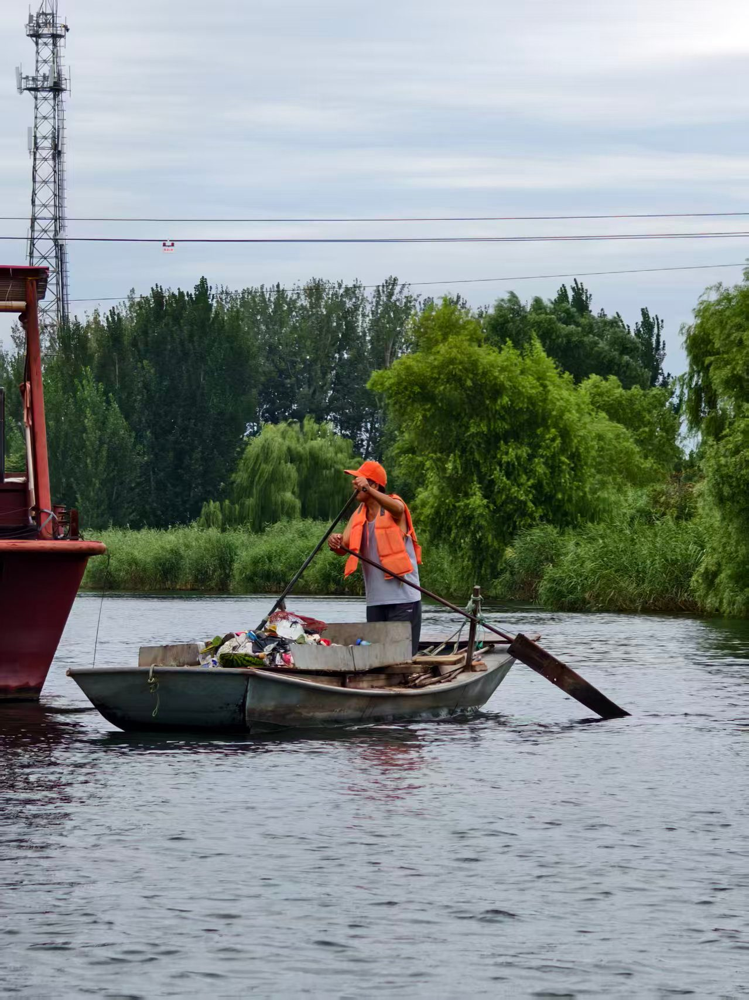

调研手记 · 2026 年 8 月 26 日
重访白洋淀：在苇荡烟火间，寻找资源共生的答案

水韵经纬调研队在 2025 年完成首轮白洋淀实地走访之后，2026 年暑期，我们再一次踏上淀区的土地。不同于第一次以摸清现状、收集基础资料为主，这一次我们带着去年调研留下的疑问与思考，开启第二轮递进式调研。我们不再只是简单记录“这里有什么景点”，而是想去探寻：生态持续向好的白洋淀，文旅发展还卡在哪些地方？普通人心中真正的期盼又是什么？
时隔一年重访王家寨、邵庄子、望月岛、雁翎队纪念馆这些老点位，最直观的感受是风景依旧动人，但变化同样藏在烟火细节里。我们回访去年接触过的渔家商户、本地村民，做对照式访谈。不少农家院老板依旧被淡旺季巨大落差所困扰：夏日游客络绎不绝，可秋风一过，生意便迅速冷清下来。大家看得见短视频流量带来的机会，可真正会做线上宣传的本地人依旧寥寥，大多还是守着老客口碑过日子。
除了回访旧点位，本次调研我们把脚步延伸到了更多过去未曾深度触及的角落。我们走进缓冲区观鸟平台、鸟类科普馆、生态环境监控中心，也走访了郭里口村、杨庄子村这些淀边村落。一边看白洋淀生态修复的硬核成果，一边倾听不同群体的心声。
在观鸟平台，我们看见大批摄影爱好者奔赴而来，希望一睹青头潜鸭等珍稀鸟类的风采，但有些游客分不清开放观鸟区和鸟类核心保护地带，存在无意惊扰野生动物的风险。科普设施硬件已经配齐，但通俗易懂的讲解、场景化的科普内容还比较稀缺，很多人来了只忙着举相机拍照，对鸟类背后的湿地故事知之甚少。
在雁翎队纪念馆，和讲解员深入交流之后，我们依旧能感受到现实的矛盾：大批研学团队前来参观，但多数研学把“看展馆”和“游芦苇荡”割裂开来。孩子们记住了雁翎队的英勇事迹，却很难切身理解，眼前这片纵横交错的苇壕，正是当年游击战士赖以生存作战的天然屏障，红色历史与脚下的湿地土地，没能真正交融在一起。
而在淀中村与淀边村落，和村民聊天时我们收获很多朴素又真实的想法。大家由衷为水清鸟归感到高兴，但也坦言，生态变好不等于家家户户都能分享文旅红利。不少普通村民没有经营民宿、游船，只能做风景的旁观者；老一辈掌握的苇编手艺、淀上老故事，缺少向外展示的窗口，年轻人外出务工，传统技艺传承的压力依然摆在眼前。
这一轮调研，我们也专门面向生态巡护人员、码头从业者、非遗手艺人、基层管理人员开展访谈，跳出游客、商户的固有视角，听见更多元的声音。我们发现白洋淀不缺好看的风景，不缺厚重的红色历史，也不缺鲜活的渔家民俗，可这些珍贵资源依旧处于“各自发光，却互不相连”的散点状态。
游客来游玩，大多是看荷花、坐游船；研学团专注于红色展馆；观鸟爱好者奔赴湿地观测点；手艺人守着自己的技艺。不同的资源点位就像一颗颗散落的珍珠，却缺少一根串联起来的线。同时我们也看到，大家对于数字化、沉浸式文旅体验的期待越来越高：游客希望游玩不再是走马观花，想听有场景、有故事的讲解；商户希望有更低门槛的流量渠道；基层工作者期盼有工具可以更好地串联全域资源，让本土的故事被更多人看见。
正是这些田野之中收获的真实感受，让我们发现了白洋淀长期存在的“人淀共生”理念和它的挖掘价值，也让我们更加坚定用虚拟数字人智能体“青翎”为主体来解决白洋淀生态文旅资源散点化发展困境。我们希望用轻量化数字化的思路，不去大拆大建，而是把已经存在的风景、历史、民俗串接起来，既守护湿地生态底线，也让游客获得更有温度的体验，更让本地普通人的声音，能够被远道而来的游客听见。
两次走进白洋淀，我们越发明白：白洋淀的魅力，从来不单单是一望无垠的芦苇与碧水。真正动人的，是这片淀泊之上，人与自然、历史与烟火交织共生的模样。而我们的调研，就是努力把这些藏在风光背后的诉求与思考，整理出来，交出属于青年的一份田野答卷。